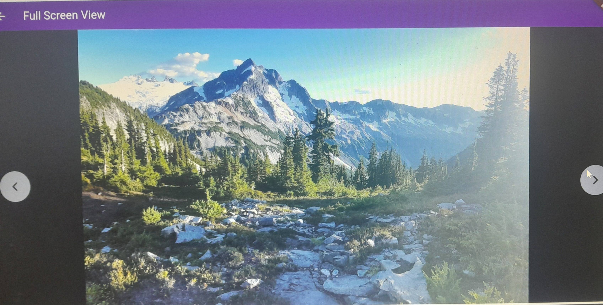
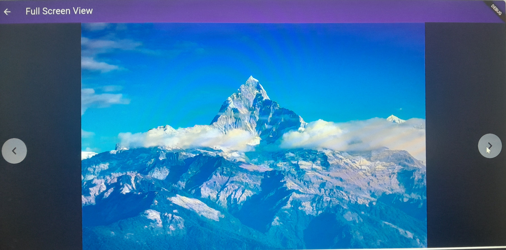
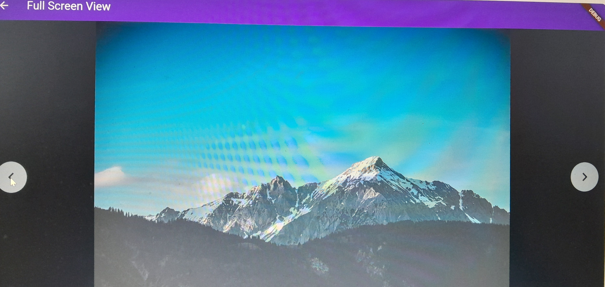
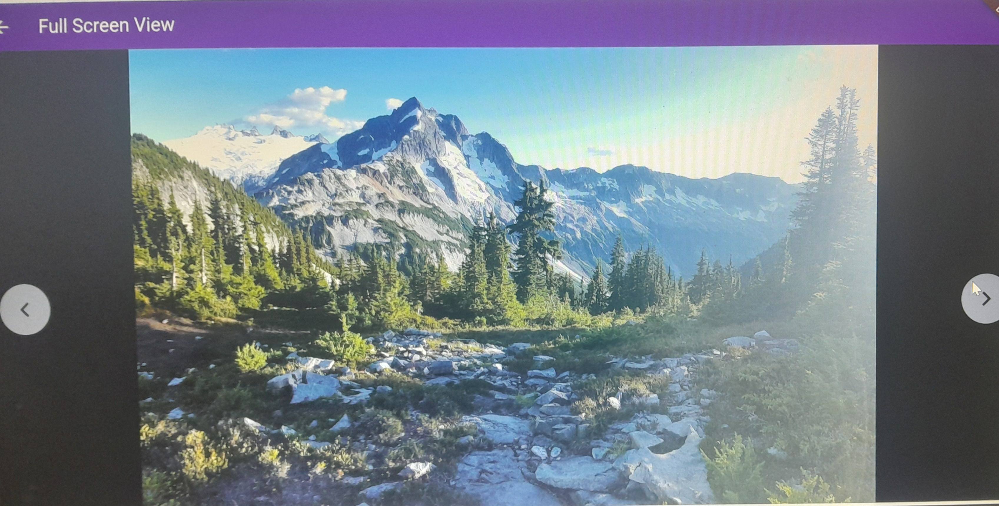
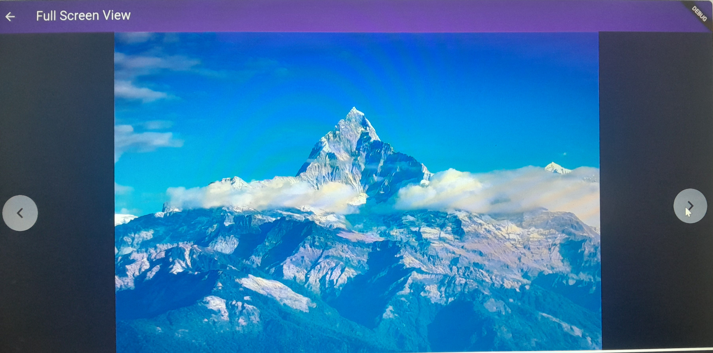
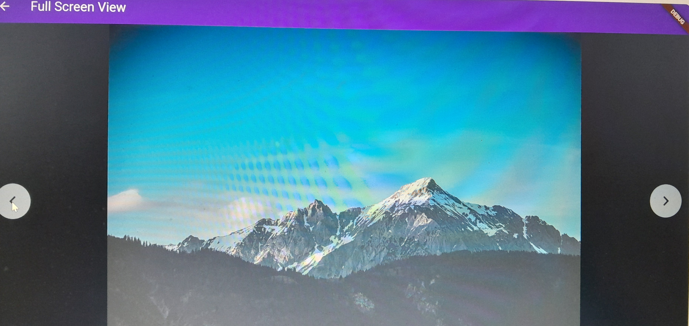

Titel der Beschreibung
Auf dem ersten Bild der Fotogalerie haben wir eine Galerie mit einem Hintergrundbild, auf dem drei
verschiedene Bilder angezeigt werden. Wenn man auf eines der Bilder klickt, wird es im Vollbildmodus
angezeigt.
Auf dem zweiten Bild sehen wir ein Bild im Vollbildmodus. Hier gibt es Pfeile, mit denen man die Bilder nach
links oder rechts scrollen kann, ohne den Vollbildmodus verlassen zu müssen. So kann man direkt aus dem
Vollbildmodus heraus zu einem anderen Bild wechseln, wie auf dem zweiten und dritten Bild zu sehen ist.
Wenn man im Vollbildmodus doppelt schnell auf das Bild klickt, wird es weiter herangezoomt, und beim
nächsten doppelten Klick wird es wieder verkleinert.
Dieses Projekt wurde mit Flutter entwickelt.
 




